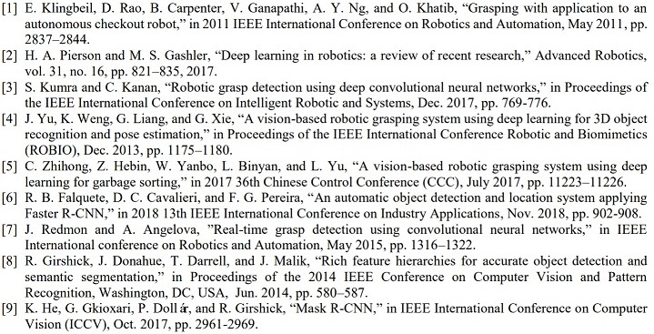

Publication

Abstract
In this paper, we present a novel vision-base robotic grasping system to enable a robotic arm with a parallel gripper to recycle reusable objects. This system can not only classify different types of objects, namely, paper, plastic, metal objects, but also predict the position of the selected object. Both camera images and deep learning techniques are key ingredient of the proposed solutions: the Kinect camera is used to capture RGB and depth images, and the Mask R-CNN model performs classification and finds a good segmentation mask, which must be the same as the shape of the selected object ideally. With the help of them, the parallel gripper finally throws the identified objects into their corresponding box successfully.
Best Student Paper Award
References
